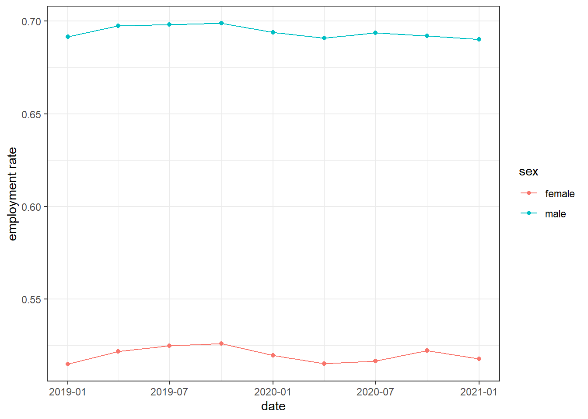

Chapter 3 Alternative mesuare
3.1 Year-to-year difference of employment rate
- Report change of employment rate \(\tilde e_{g,m,y}=\frac{e_{g,m,y}}{e_{g,m,y-1}}\)
raw %>%
arrange(sex,
quaterly,
year) %>%
group_by(sex,
quaterly) %>%
mutate(y = employment_rate/lag(employment_rate)) %>%
ungroup %>%
filter(year >= 1969) %>%
ggplot(aes(x = date,
y = y,
color = sex)
) +
geom_line() +
geom_hline(yintercept = 1) +
ylab("") +
xlab("") +
theme_bw() +
theme(legend.position = "bottom")